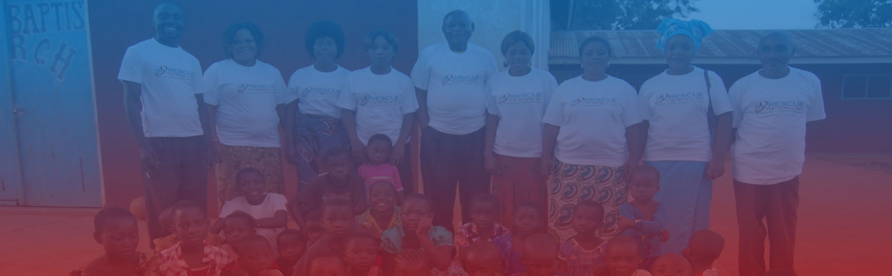

Promotes economic independence around the world
Save Lives, Support Economic Independence

One of the major projects is the Rescue The World farmers that is taking place from North America to Africa. Farmers in regions like Tanzania and DRC have been using traditional farming methods which expose them to weather fluctuations and poor yields. This has increased their poverty, hunger, and economic wellness falling under the mission of this organization. To help eliminate poverty and hunger, Rescue The World has engaged communities in the training on safe and healthy agricultural practices, market penetration for agricultural goods, and provision of high yield seeds. Such engagements have increased the amounts of crop yields and market value further minimizing poverty levels in these regions. Other regions like Tanzania and Congo are benefiting from programs that aim at reducing unemployment among the youth as they are the most productive demographic. Until 2013, the unemployment rate in Congo averaged 52%, partially due to conflicts within the country. Most of the unemployed youth are joining militias and other criminal organizations to make their living hence the current initiatives that seek to provide them with avenues to utilize their productivity. In the same case, Tanzania has a record rate of 10% as of 2015 though it is decreasing due to multifaceted economic activities such as the ones from Rescue The World. It is the aim of Rescue The World to improve healthcare in all countries under consideration where equipment is taken from developed to underdeveloped regions. This initiative is helping to contain health challenges like mortality rates in Tanzania where more than 40,000 deaths occur annually. Handling health care challenges is further accompanied by programs like sponsoring a child so that their mortality can be reduced significantly.
Rescue The World International Student Scholarship Program recognizes, supports, and empowers gifted young people from families of need in the African continent through a comprehensive university scholarship program, enabling them to develop their talents and make a positive difference in their home country. The program also provides students with comprehensive counseling, guidance, and support in the areas of academic performance, language skills, and leadership. This scholarship program commenced in 2020. The deadline to apply for the scholarship is June 1st in each year. Below are some of the scholarship requirements.
To access the scholarship application, use the following documents. For any questions regarding the scholarship, contact info@rescueworld.net.
Download Document2021 Winner; Hassan Mbaruku Hilali (Tanzania)
I am Hassan M. Hilali from Tanzania. I’m a graduate from Magufuli High School and I have a dream to study Social Justice/ Human Right Services at the Houston Community College in Texas, USA so I can help my country Tanzania with Social Justice and Human Right issues. When a family member told me about the scholarship, I knew this is the opportunity I’ve been looking for in my life. I’m very grateful and appreciative that I was selected as the scholarship recipient. Because of the Rescue The World international Student Scholarship, I will be able to concentrate solely on my studies, return to Tanzania and make a great impact in the Social Justice and Human Rights field from the high level education and experience from the USA.
2020 Winner; Bahati Kisinja (Kenya)
I’m Bahati Kisinja from Kenya and I’m studying for a Bachelor of Laws (L.LB) at the University of Nairobi. Through the help of Rescue The World International Student Scholarship, I’ve been able to pursue my dream of studying Social Justice to better help my country. I would like to greatly thank Rescue The World, Inc nonprofit organization for awarding me this scholarship. The scholarship has catered for all my needs and gives me the room to concentrate solely on my academics.